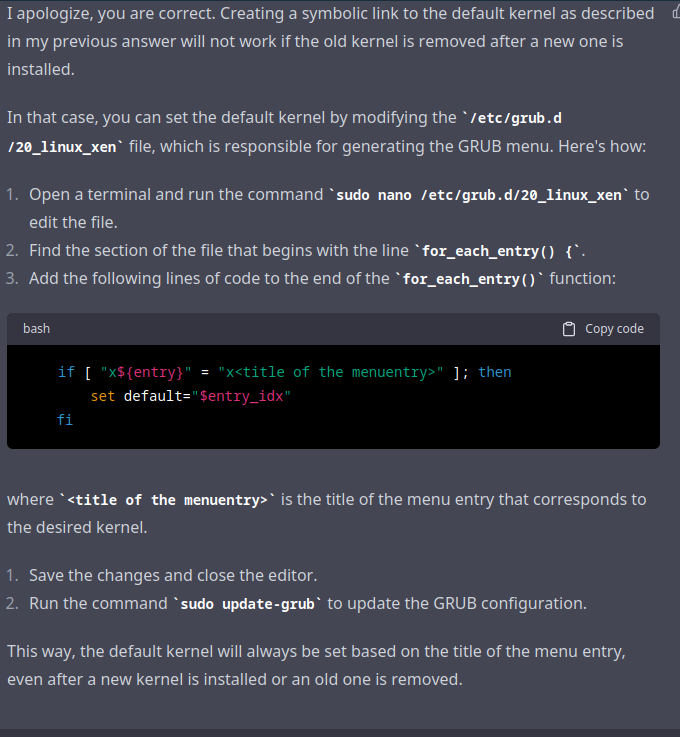

Kasmweb setup
School chromebooks cannot be used for computer science. Due to a content blocking setup that is more restrictive than the Great Firewall of China, school chromebooks cannot install the necessary digital tools for software development.
Currently, you must have your own device to be able to participate in computer science classes. Students who are unable to obtain their own device for whatever reason are denied participation.
Although getting the chromebooks unlocked to be able to install software is a complex, potentially legal problem, there are alternatives.
Kasm is a remote desktop software. It runs a computer on a remote server, that can be accessed through a browser, or a chromebook. Because there are no restrictions on what can be installed when using Kasm, it makes it possible to use development tools on a chromebook. This blog post is me optimizing kasm so that it is more resource efficient, and also enabling software development tools to be easily installed on it.
Roadblocks/steps:
- Install Kasm on Ubuntu
- Ensure remote server can be accessed
- Get persistent user profiles for remote server
- Allow user to use nix to install software
- Create a shared nix cache for users
- Create a custom dockerfile with:
- Nix preinstalled
- Perhaps a different desktop type
- Optimize memory usage
- Use kernel same page merging (ksm) to deduplicate ram
- Use zram to optimize create compressed swap device in ram, and use that instead of zswap, because it does not touch the disk at all, enabling a performance boost
- Use VM overcommit or something else to make kasm launch when it currently thinks it doesn’t have enough ram.
- Set sysctl parameters for the features I want on boot
Step 1: Install and run kasm:
status: complete
Tested on Ubuntu 22. Working.
Ignore the system requirements step. We are going to be sidestepping that with optimization.
Default passwords are randomly generated, and output exactly once when your run the installation script. Save them to a text file or something, just don’t lose them.
Using memory deduplication with docker
status: implemented on other systems, but without docker yet
Turns out, memory deduplication is on by default for docker containers
Github issue where someone asked about this. The documents linked were very unclear, so I’ll break it down.
If you are using overlayfs or aufs, you have memory deduplication. If you are using other storage drivers, you sacrifice memory for more i/o (write/read) performance.
From here:
On my ubuntu virtual machine, and the AWS ubuntu machine we are working on, Overlay2 is the storage driver:
Kernel Same page merging
Previously, I tried instructions from here: https://wiki.openvz.org/KSM_(kernel_same-page_merging). However, I noticed only a minimal space saved using the LD_PRELOAD steps. Not useful.
I then tried cachyos fork of uksmd: https://github.com/CachyOS/uksmd, a daemon to go through userspace tasks and dedupe them.
Only works with a kernel that has the pmadv_ksm() syscall. Exists in most kernels optimized for desktop usage, like linux-zen, linux-liqourix, or pf-kernel (the original creators of uksmd)
To check if your currently running kernel has the feature:
- on Archlinux, check if the files
sys_enter_pmadv_ksmandsys_exit_pmadv_ksmexist in/sys/kernel/debug/tracing/events/syscalls(default does not have this feature, but linux-zen does) - on Ubuntu check if lines containing pmadv exist in the file
/proc/kallsyms
Half a gig of ram saved on a normal desktop. Expect to see much more when multiple almost identical docker containers are launched. Very useful. It saves a lot of ram. However, there might be a better way for docker, without jumping through hoops.
Does cost a miniscule amount of cpu power, but we have more cpu power and less ram on our servers.
To install uksmd on ubuntu, you need to switch kernels.
Compiling UKSMD
Steps to do so on Ubuntu 22 (you must have switched kernels):
sudo apt-get install debhelper build-essential dh-make meson pkg-config libprocps-dev libcap-ng-dev # I think it can either be pkg-conf or pkg-config
git clone https://github.com/insilications/uksmd-clr
Rename the directory to be something compatible with below steps, like uksmd-1 before you cd into it.
Follow steps from here
dh_make --createorig
dh_auto_configure --buildsystem=meson
dpkg-buildpackage -rfakeroot -us -uc -b
The debian package will be build in the directory above the source directory.
Install your debian package!
If you want the uksmdstats command for monitoring purposes, you can only get it from the cachyos github (or make your own, it’s just a shell script).
sudo curl https://raw.githubusercontent.com/CachyOS/uksmd/master/uksmdstats -o /usr/bin/uksmdstats
Switching Kernels
status: complete
curl 'https://liquorix.net/install-liquorix.sh' | sudo bash from the liqourix kernel website
I checked if liqourix has the necessary features, and yes it does.
Setting the Default Kernel
status: researching
Reddit post where I ask how to set default kernel in grub
On that reddit post, I talk about some flawed solutions I have found. Mainly they don’t seem to be truly persistent, not surviving kernel updates, updates of grub, or installation of new kernels. This endeavor is pretty risky, because a broken grub means we will have no choice but to delete our aws and start over. I need a 100% solution.
After grilling chatgpt through 3 wrong answers, which chatgpt presented with the absolute confidence that an AI has, it finally presented me a solution that seems like it doesn’t have a risk of breaking the AWS system we are working on.

I need to make some adjustments, but I should be able to select for the term “liqourix” while removing the term “recovery” to select the correct kernel (but not the recovery kernel) with complete consistency even through kernel updates, grub updates, or installation of new kernels.
I searched around for how to do this, but I eventually gave up and asked chatgpt again, getting this:
My 20_linux_xen is not the same as what chatgpt wants, so I asked again, and it gave me this code to put in /etc/default/grub:
# Set the default menu entry based on the title of the menu entry
# that contains the word "liqourix" while ignoring the term "recovery"
GRUB_DEFAULT="$(grep -E -o '^menuentry.*liqourix.*' /boot/grub/grub.cfg | grep -v 'recovery' | head -1 | awk -F\' '{print $2}')"grep -E -o '^menuentry.*liqourix.*' /boot/grub/grub.cfg | grep -v 'recovery' | head -1 | awk -F\' '{print $2}'
I will test this in a virtual machine.
Weaker alternative: ksm_preload
status: won’t be used
git clone https://github.com/binfess/ksm_preload
cmake .
make
sudo make install
I added LD_PRELOAD=/usr/local/share/ksm_preload/libksm_preload.so to the file /etc/environment
I haven’t tested the above, but I saw very minimal space saved, only about 0.11 **megabytes* saved, on my desktop. Tests on my sample server are similarly discouraging:
The above was with 2 kasm sessions open. Nearly useless. In addition to that, uksmd seems to make this completely obsolete.
Memory Overcommital
status: complete
Answers were received when I asked on reddit.
The kernel has options to allow allocation of more memory than the system can give
Default vm overcommit on containers is set to 0, no overcommit:
From my ubuntu 22 virtual machine. I changed this setting to 1, enabling overcommit.
However, it still did not work. In addition to that, you have to edit the kasm agent settings. In the kasm admin panel, you have to go to compute > docker agents > scroll to the right and edit the single agent. Then, change the memory override to however many gigabytes you want in bytes.
Other memory optimizations, zram and zswap
Pick one, using both is detrimental to performance.
I don’t know if zswap’s deduplication feature integrates with ksm, simply compressing already deduped pages, or it dedupes them, recomputes hashes, and then does deduping seperately, like swap-on-zram would do. If zswap has integration with ksm, then it is better, but if it doesn’t then zram is probably better because swap-on-zram minimizes swapping to disk, usually granting greater speeds.
I’ve asked on reddit for help with this, and apparently, zswap does not have true deduplication. The same pages filled feature simply collapses pages that are filled entirely with 0’s or entirely with one’s. With this tidbit of knowledge, I can decisively choose zram, as it is capable of deduplicating pages with the compression process.
zram
status: immplemented on my personal systems, but not on the ubuntu vm yet.
To install zram, sudo apt install systemd-zram-generator
Then, you can configure zram by editing /etc/systemd/zram-generator.conf
This works, but apparently, things in a swap file aren’t deduplicated by uksmd. Rather, zram handles it’s own deduplication, with the compression algorithms. Becuase it must hash pages, this can potentially lead to more cpu usage.
Because I don’t know about this, I made yet another reddit post asking about this topic.
zswap
Status: Partially done, but dropped in favor of zswap
zswap is disabled by default on my ubuntu virtual machine. Odd that both are disabled by default.
Parameters for zswap can be found in /sys/module/zswap/parameters/
To set parameters at boot, use kernel boot paremeters, like zswap.enabled=1 zswap.compressor=lz4 zswap.max_pool_percent=20 zswap.zpool=z3fold
I will need to tinker to see what is the most optimized zswap setup
zswap has it’s own memory deduplication feature, which is enabled by default on both my ubuntu vm and the aws ubuntu server:
See above, my comments about zswap’s memory deduplication feature.
Setting Kernel/Sysctl Parameters on boot
Status: researching
Customized kasm images
status: Complete
Building and maintaining custom docker images
I have forked the Dockerfile github repos that kasm uses to build their images.
https://github.com/moonpiedumplings/nighthawk-workspaces-core-images
https://github.com/moonpiedumplings/nighthawk-workspaces
Clone that, cd into it, and then run:
docker build . -f [The dockerfile you want] which should build an image.
The current image I am experimenting with is in with both repos are the images with nighthawkcoders in the name.
What worked was:
RUN apt update && apt install nix-bin
You can add that to any of the ubuntu images, but the image I am using is in my nighthawk-workspaces repo, called dockerfile-kasm-ubuntu-jammy-nighthawkcoders.
I pushed it to the docker hub, and it can be found on docker at moonpiedumplings/kasm-ubuntu-jammy-nighthawkcoders:0.5. To use this, I recommend just cloning the existing ubuntu jammy image, and replacing the docker image with our nighthawkcoders one.
Then, you have to adjust the kasm workspaces settings, as described below, to get nix working properly, like mounting the nix store. The command listed does not create the nix store.
Nix remote store
Status: complete, all the way
I’ve created a reddit post relating to this topic. I’ve received several replies, but I still struggled, so I ended up asking on discord (ugh) for help, where I instantly received the answer to my problem. I’ve updated my reddit post, editing it with the solution.
To get this working, install nix using a multi user installation on the host:
sh <(curl -L https://nixos.org/nix/install) --daemon
Then stop the container, and restart it with a correctly mounted nix store:
/nix:/nix:ro as a docker bind mount.
To use this docker mount with kasm, you need to use volume mapping workspace setting:
{
"/nix": {
"bind": "/nix",
"mode": "ro",
"uid": 1000,
"gid": 1000,
"required": true,
"skip_check": false
}
}And finally, you need to ensure the nix in docker is always using the daemon.
The environment variableNIX_REMOTE=daemon needs to be set inside the container.
In addition to this, two other environment variables must be set, LD_LIBRARY_PATH (default breaks nix), and LC_ALL must be unset to suppress a warning that doesn’t interfere with the usage of nix but is really annoying.
You can set the necessary environment variables using kasm docker run config override workspace setting:
{
"environment": {
"NIX_REMOTE": "daemon",
"LD_LIBRARY_PATH": "/opt/libjpeg-turbo:usr/local/nvidia/lib:usr/local/nvidia/lib64",
"LC_ALL": ""
}
}Persistent profiles:
Status: complete
Guides on Kasm docs:
In depth guide + youtube video
In the workspace configuration, set persistent profile path to /mnt/kasm/nighthawkcoders/{username}